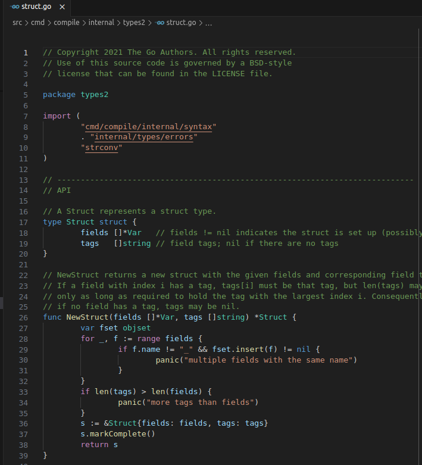

Pahole: C, Go, rust
2024-4-20
Content:
- pahole with C
- pahole with Go
- pahole with rust
- classic C structs
- tuple structs
- unit structs
pahole shows data structure layouts
encoded in debugging information formats,
DWARF and CTF being supported.
I use pahole to examine structures' "true" size along with byte holes and paddings.
All experiments are done via:
$ pahole --version
v1.26
C structs have debug info support both in user and kernel space,
so pahole works perfectly with C.
I also use pahole during Linux kernel development,
This is a simple userspace C program with `struct foo` and its 4 fields (members):
#include <stdio.h>
#include <string.h>
#include <stdint.h>
struct foo {
int a;
uint8_t b;
long c;
int d;
};
int main()
{
struct foo f;
memset(&f, 0, sizeof(struct foo));
f.a = 0xff;
f.b = 0x1;
f.c = 0x7f01020304050608;
f.d = 0x7f414243;
return 0;
}
You've might already spotted the byte hole and padding due to fields' order.
Compiling it with debug symbols `-g` and here is pahole output:
struct foo {
int a; /* 0 4 */
uint8_t b; /* 4 1 */
/* XXX 3 bytes hole, try to pack */
long int c; /* 8 8 */
int d; /* 16 4 */
/* size: 24, cachelines: 1, members: 4 */
/* sum members: 17, holes: 1, sum holes: 3 */
/* padding: 4 */
/* last cacheline: 24 bytes */
};
> /* XXX 3 bytes hole, try to pack */
...
> /* padding: 4 */
Our `sizeof(struct foo)` is 24 bytes, though struct members' size sum is
17 bytes. So we do have 7 bytes added which are 3 bytes hole + 4 bytes padding.
Let's take a look at gdb how it looks like:
...
0x00005555555551b5 <+44>: call 0x555555555090 <memset@plt>
0x00005555555551ba <+49>: mov DWORD PTR [rbp-0x20],0xff
0x00005555555551c1 <+56>: mov BYTE PTR [rbp-0x1c],0x1
0x00005555555551c5 <+60>: movabs rax,0x7f01020304050608
0x00005555555551cf <+70>: mov QWORD PTR [rbp-0x18],rax
0x00005555555551d3 <+74>: mov DWORD PTR [rbp-0x10],0x7f414243
=> 0x00005555555551da <+81>: mov esi,0x4
...
gdb-peda$ print &f
$1 = (struct foo *) 0x7fffffffdb50
gdb-peda$ x/3gx &f
0x7fffffffdb50: 0x00000001000000ff 0x7f01020304050608
0x7fffffffdb60: 0x000000007f414243
Let's highlight everything:
- int a = 0xff (yellow)
- uint8_t b = 1 (blue)
- long c = 0x7f01020304050608 (purple)
- int d = 0x7f414243 (orange)
0x7fffffffdb50: 0x00000001000000ff 0x7f01020304050608
0x7fffffffdb60: 0x000000007f414243
Now highlight:
- 3 bytes hole (red)
- 4 bytes of padding (green)
0x7fffffffdb50: 0x00000001000000ff 0x7f01020304050608
0x7fffffffdb60: 0x000000007f414243
Solution for this is to properly order fields to reduce the size of it.
Note that AFAIK, it's not always the recommendation and it's ok to have holes,
paddings in structs depending on cases like "convenience" of groupping related fields
together rather than data types etc.
Here we re-ordered fields and now we have only 3 bytes hole and 0 bytes of padding.
So we reduced our struct with 4 bytes.
struct foo {
uint8_t b; // <-- 3 bytes hole for the next sizeof(int) == 4
int a;
int d; // <-- no hole as int+int == 8 bytes (next field is 8 bytes as well)
long c;
// <-- no padding
};
Pahole also works with bitfields:
struct foo {
int a;
uint8_t b:1; // <- only 1 bit out of 8 bits
long c;
int d;
};
struct foo {
int a; /* 0 4 */
uint8_t b:1; /* 4: 0 1 */
/* XXX 7 bits hole, try to pack */
/* XXX 3 bytes hole, try to pack */
long int c; /* 8 8 */
int d; /* 16 4 */
/* size: 24, cachelines: 1, members: 4 */
/* sum members: 16, holes: 1, sum holes: 3 */
/* sum bitfield members: 1 bits, bit holes: 1, sum bit holes: 7 bits */
/* padding: 4 */
/* last cacheline: 24 bytes */
};
Good. Now let's check Go language as structs in Go has also padding and bytes hole
that you need to consider Go:
package main
import "fmt"
type foo struct {
a int32
b uint8
c int64
d int32
}
func main() {
f := foo{
a: 0xff,
b: 1,
c: 0x7f01020304050608,
d: 0x7f414243,
}
fmt.Printf("%v\n", f)
}
pahole gives more output than this (below), it also gives Go runtime,
internal ABI struct layouts. Let's grep only our main package's foo struct:
...
struct main.foo {
int32 a; /* 0 4 */
uint8 b; /* 4 1 */
/* XXX 3 bytes hole, try to pack */
int64 c; /* 8 8 */
int32 d; /* 16 4 */
/* size: 24, cachelines: 1, members: 4 */
/* sum members: 17, holes: 1, sum holes: 3 */
/* padding: 4 */
/* last cacheline: 24 bytes */
};
...
Now using gdb again on Go binary (compiled via `go build`):
0x47c592 <main.main+18>: mov DWORD PTR [rsp+0x38],0x0
0x47c59a <main.main+26>: mov BYTE PTR [rsp+0x3c],0x0
0x47c59f <main.main+31>: mov QWORD PTR [rsp+0x40],0x0
0x47c5a8 <main.main+40>: mov DWORD PTR [rsp+0x48],0x0
0x47c5b0 <main.main+48>: mov DWORD PTR [rsp+0x38],0xff
0x47c5b8 <main.main+56>: mov BYTE PTR [rsp+0x3c],0x1
0x47c5bd <main.main+61>: movabs rcx,0x7f01020304050608
0x47c5c7 <main.main+71>: mov QWORD PTR [rsp+0x40],rcx
=> 0x47c5cc <main.main+76>: mov DWORD PTR [rsp+0x48],0x7f414243
...
gdb-peda$ x/3gx $rsp+0x38
0xc00004a708: 0x00000001000000ff 0x7f01020304050608
0xc00004a718: 0x000000007f414243
Same 3 bytes hole and 4 bytes of padding as in C.
In fact, let's take a look at google/go (7f76c00fc5678fa7, v1.23) compiler
source code of struct type:

As you can see `fields []*Var` is a slice of Var data type, hence, fields' order
operates same as in C structs: from upper to lower field.
BTW, I've learned a lot of Go language compiler, linker and runtime internals
during this pahole research. Kudos.
Submited my patch https://go-review.googlesource.com/c/go/+/578795
to reduce runtime structs
In general, we should consider bytes hole, padding factors during
the development of fancy web-apps with Go.
P.S.: Go structs do not have built-in support for bitfields, unions, but
there are packages to do so, like github.com/arl/bitfield package.
I'm using outdated (need to upgrade)
$ rustc --version
rustc 1.77.2 (25ef9e3d8 2024-04-09)
Per doc.rust-lang.org spec:
There are three types of structures ("structs") that can be created using the struct keyword:
- Tuple structs, which are, basically, named tuples.
- The classic C structs
- Unit structs, which are field-less, are useful for generics.
TL;DR: rust is not well supported with DWARF features which pahole rely on.
fn main() {
#[repr(C)]
struct Foo {
a: u32,
b: u8,
c: u64,
d: u32
}
let f = Foo {
a: 0xff,
b: 0x1,
c: 0x7f01020304050608,
d: 0x7f414243
};
println!("a = {}", f.a);
println!("b = {}", f.b);
println!("c = {}", f.c);
println!("d = {}", f.d);
}
I am using pahole on the eventual linked ELF binary, btw.
But we will get the same `struct Foo` pahole output even if we compile
the object only via `rustc -g --emit=obj main.rs -o main.o`.
So with `pahole main` there is no classic `struct Foo` in output,
I had to add `--show_private_classes` (found it in here):
$ pahole --show_private_classes ./main
It gives me in STDERR following:
die__process_function: tag not supported 0x2f (template_type_parameter)!
die__process_class: tag not supported 0x33 (variant_part)!
Let's investigate this a bit later, here is the full STDOUT of pahole:
struct <std::rt::lang_start::{closure_env#0}<()> as core::ops::function::Fn<()>>::{vtable_type} {
() * drop_in_place __attribute__((__aligned__(8))); /* 0 8 */
usize size __attribute__((__aligned__(8))); /* 8 8 */
usize align __attribute__((__aligned__(8))); /* 16 8 */
() * __method3 __attribute__((__aligned__(8))); /* 24 8 */
() * __method4 __attribute__((__aligned__(8))); /* 32 8 */
() * __method5 __attribute__((__aligned__(8))); /* 40 8 */
/* size: 48, cachelines: 1, members: 6 */
/* forced alignments: 6 */
/* last cacheline: 48 bytes */
} __attribute__((__aligned__(8)));
struct {closure_env#0}<()> {
void (*main)(void) __attribute__((__aligned__(8))); /* 0 8 */
/* size: 8, cachelines: 1, members: 1 */
/* forced alignments: 1 */
/* last cacheline: 8 bytes */
} __attribute__((__aligned__(8)));
struct ExitCode {
private:
struct ExitCode __0 __attribute__((__aligned__(1))); /* 0 1 */
/* size: 1, cachelines: 1, members: 1 */
/* forced alignments: 1 */
/* last cacheline: 1 bytes */
} __attribute__((__aligned__(1)));
struct Placeholder {
public:
struct Count precision __attribute__((__aligned__(8))); /* 0 16 */
/* XXX last struct has 16 bytes of padding */
struct Count width __attribute__((__aligned__(8))); /* 16 16 */
/* XXX last struct has 16 bytes of padding */
usize position __attribute__((__aligned__(8))); /* 32 8 */
char fill __attribute__((__aligned__(4))); /* 40 4 */
u32 flags __attribute__((__aligned__(4))); /* 44 4 */
enum Alignment align __attribute__((__aligned__(1))); /* 48 1 */
/* size: 56, cachelines: 1, members: 6 */
/* padding: 7 */
/* paddings: 2, sum paddings: 32 */
/* forced alignments: 6 */
/* last cacheline: 56 bytes */
} __attribute__((__aligned__(8)));
struct Is {
/* XXX 8 bytes hole, try to pack */
public:
usize __0 __attribute__((__aligned__(8))); /* 8 8 */
/* size: 16, cachelines: 1, members: 1 */
/* sum members: 8, holes: 1, sum holes: 8 */
/* forced alignments: 1, forced holes: 1, sum forced holes: 8 */
/* last cacheline: 16 bytes */
} __attribute__((__aligned__(8)));
struct Param {
/* XXX 8 bytes hole, try to pack */
public:
usize __0 __attribute__((__aligned__(8))); /* 8 8 */
/* size: 16, cachelines: 1, members: 1 */
/* sum members: 8, holes: 1, sum holes: 8 */
/* forced alignments: 1, forced holes: 1, sum forced holes: 8 */
/* last cacheline: 16 bytes */
} __attribute__((__aligned__(8)));
struct Implied {
/* size: 16, cachelines: 1, members: 0 */
/* padding: 16 */
/* last cacheline: 16 bytes */
} __attribute__((__aligned__(8)));
struct Count {
/* size: 16, cachelines: 1, members: 0 */
/* padding: 16 */
/* last cacheline: 16 bytes */
} __attribute__((__aligned__(8)));
struct Argument {
private:
struct Opaque * value __attribute__((__aligned__(8))); /* 0 8 */
struct Result<(), core::fmt::Error> (*formatter)(struct Opaque *, struct Formatter *) __attribute__((__aligned__(8))); /* 8 8 */
/* size: 16, cachelines: 1, members: 2 */
/* forced alignments: 2 */
/* last cacheline: 16 bytes */
} __attribute__((__aligned__(8)));
struct Opaque {
/* size: 0, cachelines: 0, members: 0 */
} __attribute__((__aligned__(1)));
struct Arguments {
private:
struct &[&str] pieces __attribute__((__aligned__(8))); /* 0 16 */
struct &[core::fmt::rt::Argument] args __attribute__((__aligned__(8))); /* 16 16 */
struct Option<&[core::fmt::rt::Placeholder]> fmt __attribute__((__aligned__(8))); /* 32 16 */
/* XXX last struct has 16 bytes of padding */
/* size: 48, cachelines: 1, members: 3 */
/* paddings: 1, sum paddings: 16 */
/* forced alignments: 3 */
/* last cacheline: 48 bytes */
} __attribute__((__aligned__(8)));
struct Error {
/* size: 0, cachelines: 0, members: 0 */
} __attribute__((__aligned__(1)));
struct Formatter {
private:
struct Option<usize> width __attribute__((__aligned__(8))); /* 0 16 */
/* XXX last struct has 16 bytes of padding */
struct Option<usize> precision __attribute__((__aligned__(8))); /* 16 16 */
/* XXX last struct has 16 bytes of padding */
struct &mut dyn core::fmt::Write buf __attribute__((__aligned__(8))); /* 32 16 */
char fill __attribute__((__aligned__(4))); /* 48 4 */
u32 flags __attribute__((__aligned__(4))); /* 52 4 */
enum Alignment align __attribute__((__aligned__(1))); /* 56 1 */
/* size: 64, cachelines: 1, members: 6 */
/* padding: 7 */
/* paddings: 2, sum paddings: 32 */
/* forced alignments: 6 */
} __attribute__((__aligned__(8)));
struct None {
/* size: 16, cachelines: 1, members: 0 */
/* padding: 16 */
/* last cacheline: 16 bytes */
} __attribute__((__aligned__(8)));
struct Some {
public:
struct &[core::fmt::rt::Placeholder] __0 __attribute__((__aligned__(8))); /* 0 16 */
/* size: 16, cachelines: 1, members: 1 */
/* forced alignments: 1 */
/* last cacheline: 16 bytes */
} __attribute__((__aligned__(8)));
struct Option<&[core::fmt::rt::Placeholder]> {
/* size: 16, cachelines: 1, members: 0 */
/* padding: 16 */
/* last cacheline: 16 bytes */
} __attribute__((__aligned__(8)));
struct Some {
/* XXX 8 bytes hole, try to pack */
public:
usize __0 __attribute__((__aligned__(8))); /* 8 8 */
/* size: 16, cachelines: 1, members: 1 */
/* sum members: 8, holes: 1, sum holes: 8 */
/* forced alignments: 1, forced holes: 1, sum forced holes: 8 */
/* last cacheline: 16 bytes */
} __attribute__((__aligned__(8)));
struct Option {
/* size: 16, cachelines: 1, members: 0 */
/* padding: 16 */
/* last cacheline: 16 bytes */
} __attribute__((__aligned__(8)));
struct Ok {
/* XXX 1 byte hole, try to pack */
public:
() __0 __attribute__((__aligned__(1))); /* 1 0 */
/* size: 1, cachelines: 1, members: 1 */
/* forced alignments: 1, forced holes: 1, sum forced holes: 1 */
/* last cacheline: 1 bytes */
} __attribute__((__aligned__(1)));
struct Err {
/* XXX 1 byte hole, try to pack */
public:
struct Error __0 __attribute__((__aligned__(1))); /* 1 0 */
/* size: 1, cachelines: 1, members: 1 */
/* forced alignments: 1, forced holes: 1, sum forced holes: 1 */
/* last cacheline: 1 bytes */
} __attribute__((__aligned__(1)));
struct Result<(), core::fmt::Error> {
/* size: 1, cachelines: 0, members: 0 */
/* padding: 1 */
/* last cacheline: 1 bytes */
} __attribute__((__aligned__(1)));
struct &[&str] {
struct &str * data_ptr __attribute__((__aligned__(8))); /* 0 8 */
usize length __attribute__((__aligned__(8))); /* 8 8 */
/* size: 16, cachelines: 1, members: 2 */
/* forced alignments: 2 */
/* last cacheline: 16 bytes */
} __attribute__((__aligned__(8)));
struct &str {
u8 * data_ptr __attribute__((__aligned__(8))); /* 0 8 */
usize length __attribute__((__aligned__(8))); /* 8 8 */
/* size: 16, cachelines: 1, members: 2 */
/* forced alignments: 2 */
/* last cacheline: 16 bytes */
} __attribute__((__aligned__(8)));
struct &[core::fmt::rt::Placeholder] {
struct Placeholder * data_ptr __attribute__((__aligned__(8))); /* 0 8 */
usize length __attribute__((__aligned__(8))); /* 8 8 */
/* size: 16, cachelines: 1, members: 2 */
/* forced alignments: 2 */
/* last cacheline: 16 bytes */
} __attribute__((__aligned__(8)));
struct &[core::fmt::rt::Argument] {
struct Argument * data_ptr __attribute__((__aligned__(8))); /* 0 8 */
usize length __attribute__((__aligned__(8))); /* 8 8 */
/* size: 16, cachelines: 1, members: 2 */
/* forced alignments: 2 */
/* last cacheline: 16 bytes */
} __attribute__((__aligned__(8)));
struct &mut dyn core::fmt::Write {
struct dyn core::fmt::Write * pointer __attribute__((__aligned__(8))); /* 0 8 */
usize * vtable __attribute__((__aligned__(8))); /* 8 8 */
/* size: 16, cachelines: 1, members: 2 */
/* forced alignments: 2 */
/* last cacheline: 16 bytes */
} __attribute__((__aligned__(8)));
struct dyn core::fmt::Write {
/* size: 0, cachelines: 0, members: 0 */
} __attribute__((__aligned__(1)));
struct Foo {
protected:
u32 a __attribute__((__aligned__(4))); /* 0 4 */
u8 b __attribute__((__aligned__(1))); /* 4 1 */
/* XXX 3 bytes hole, try to pack */
u64 c __attribute__((__aligned__(8))); /* 8 8 */
u32 d __attribute__((__aligned__(4))); /* 16 4 */
/* size: 24, cachelines: 1, members: 4 */
/* sum members: 17, holes: 1, sum holes: 3 */
/* padding: 4 */
/* forced alignments: 4, forced holes: 1, sum forced holes: 3 */
/* last cacheline: 24 bytes */
} __attribute__((__aligned__(8)));
You can see multiple XXX byte holes and paddings detected via pahole
(sounds like we can submit patches in future), though can't confirm
if it's false-positive, but should be valid most likely.
At the end of this STDOUT, we see our `struct Foo`:
struct Foo {
u32 a __attribute__((__aligned__(4))); /* 0 4 */
u8 b __attribute__((__aligned__(1))); /* 4 1 */
/* XXX 3 bytes hole, try to pack */
u64 c __attribute__((__aligned__(8))); /* 8 8 */
u32 d __attribute__((__aligned__(4))); /* 16 4 */
/* size: 24, cachelines: 1, members: 4 */
/* sum members: 17, holes: 1, sum holes: 3 */
/* padding: 4 */
/* forced alignments: 4, forced holes: 1, sum forced holes: 3 */
/* last cacheline: 24 bytes */
} __attribute__((__aligned__(8)));
Now let's examine this via gdb, though we need to use `rust-gdb` instead.
$ rust-gdb -q ./main
Reading symbols from ./main...
gdb-peda$ b main.rs:10
Breakpoint 1 at 0x8b07: file main.rs, line 10.
gdb-peda$ r
...
gdb-peda$ x/11i $rip
0x55555555cb07 <_ZN4main4main17h..f933E+7>: mov DWORD PTR [rsp+0x50],0xff
0x55555555cb0f <_ZN4main4main17h..f933E+15>: lea rax,[rsp+0x54]
0x55555555cb14 <_ZN4main4main17h..f933E+20>: mov QWORD PTR [rsp+0x8],rax
0x55555555cb19 <_ZN4main4main17h..f933E+25>: mov BYTE PTR [rsp+0x54],0x1
0x55555555cb1e <_ZN4main4main17h..f933E+30>: lea rax,[rsp+0x58]
0x55555555cb23 <_ZN4main4main17h..f933E+35>: mov QWORD PTR [rsp+0x18],rax
0x55555555cb28 <_ZN4main4main17h..f933E+40>: movabs rax,0x7f01020304050608
0x55555555cb32 <_ZN4main4main17h..f933E+50>: mov QWORD PTR [rsp+0x58],rax
0x55555555cb37 <_ZN4main4main17h..f933E+55>: lea rax,[rsp+0x60]
0x55555555cb3c <_ZN4main4main17h..f933E+60>: mov QWORD PTR [rsp+0x40],rax
0x55555555cb41 <_ZN4main4main17h..f933E+65>: mov DWORD PTR [rsp+0x60],0x7f414243
=> 0x55555555cb49 <_ZN4main4main17h..f933E+73>: lea rcx,[rsp+0x50]
gdb-peda$ x/3fx $rsp+0x50
0x7fffffffd6d0: 0x00000001000000ff 0x7f01020304050608
0x7fffffffd6e0: 0x000000007f414243
As we can see, it's the same classic C, Go pattern in Rust with classic C structs.
P.S.: Bitfields are available via bitfield_struct Crate
According to rust-lang book:
Rust also supports structs that look similar to tuples, called tuple structs.
Tuple structs have the added meaning the struct name provides but don’t have
names associated with their fields; rather, they just have the types of the fields.
fn main() {
struct Foo(u32, u8, u64, u32);
let f = Foo(0xff, 0x1, 0x7f01020304050608, 0x7f414243);
println!("a = {}", f.0);
println!("b = {}", f.1);
println!("c = {}", f.2);
println!("d = {}", f.3);
}
AFAIU, tuple type as the list has the order, so tuple struct fields' order should matter.
struct Foo {
u64 __2 __attribute__((__aligned__(8))); /* 0 8 */
u32 __0 __attribute__((__aligned__(4))); /* 8 4 */
u32 __3 __attribute__((__aligned__(4))); /* 12 4 */
u8 __1 __attribute__((__aligned__(1))); /* 16 1 */
/* size: 24, cachelines: 1, members: 4 */
/* padding: 7 */
/* forced alignments: 4 */
/* last cacheline: 24 bytes */
} __attribute__((__aligned__(8)));
Interesting. `struct Foo` order has been changed, though I've declared it as
`struct Foo(u32, u8, u64, u32);`.
It would be better to have the order as u8, u32, u32, u64 to get 20 bytes instead of 24.
Need to investigate (will update as UPDATE) what's the logic of such as aligning.
I also tested it with 0 optimization flag via
`rustc -g -C opt-level=0 main_tuple.rs -o main_tuple` and got the same result.
gdb-peda$ x/11i $rip
0x55555555cc17 <_ZN10main_tuple4main17h..2a7E+7>: lea rcx,[rsp+0x58]
0x55555555cc1c <_ZN10main_tuple4main17h..2a7E+12>: mov DWORD PTR [rsp+0x58],0xff
0x55555555cc24 <_ZN10main_tuple4main17h..2a7E+20>: lea rax,[rsp+0x60]
0x55555555cc29 <_ZN10main_tuple4main17h..2a7E+25>: mov QWORD PTR [rsp+0x10],rax
0x55555555cc2e <_ZN10main_tuple4main17h..2a7E+30>: mov BYTE PTR [rsp+0x60],0x1
0x55555555cc33 <_ZN10main_tuple4main17h..2a7E+35>: movabs rax,0x7f01020304050608
0x55555555cc3d <_ZN10main_tuple4main17h..2a7E+45>: mov QWORD PTR [rsp+0x50],rax
0x55555555cc42 <_ZN10main_tuple4main17h..2a7E+50>: lea rax,[rsp+0x5c]
0x55555555cc47 <_ZN10main_tuple4main17h..2a7E+55>: mov QWORD PTR [rsp+0x40],rax
0x55555555cc4c <_ZN10main_tuple4main17h..2a7E+60>: mov DWORD PTR [rsp+0x5c],0x7f414243
=> 0x55555555cc54 <_ZN10main_tuple4main17h..2a7E+68>: mov QWORD PTR [rsp+0x1d8],rcx
gdb-peda$ x/10gx $rsp+0x50
0x7fffffffd5e0: 0x7f01020304050608 0x7f414243000000ff
0x7fffffffd5f0: 0x0000000000000001
So bigger data type like u64 is filled first, then u32, u32 and u8.
The last 3rd unit structs of Rust. Well, they are mostly for generics, so
it's expected not to have any fields in unit structs as it's stated in rust
Unit structs, which are field-less, are useful for generics.
fn main() {
struct Foo;
impl Foo {
fn new(_a: u32, _b: u8, _c: u64, _d: u32) -> Self {
// You can ignore the fields as there are none
Self
}
}
let _f = Foo::new(0xff, 0x1, 0x7f01020304050608, 0x7f414243);
}
struct Foo {
/* size: 0, cachelines: 0, members: 0 */
} __attribute__((__aligned__(1)));
So in general, we can say we've observed 2 different types of Rust structs,
compiled with `rustc` (haven't checked with other LLVM compilers though),
and when classic Rust structs align fields similar to C structs, whereas
Rust tuple structs align with optimization.
--
Sabyrzhan Tasbolatov